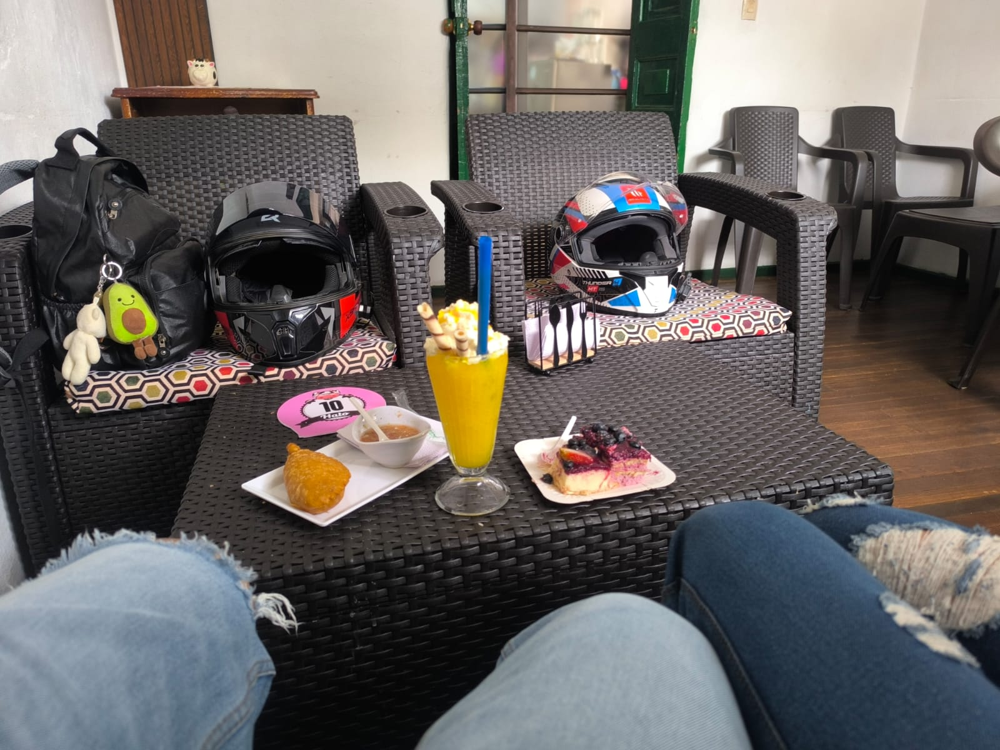
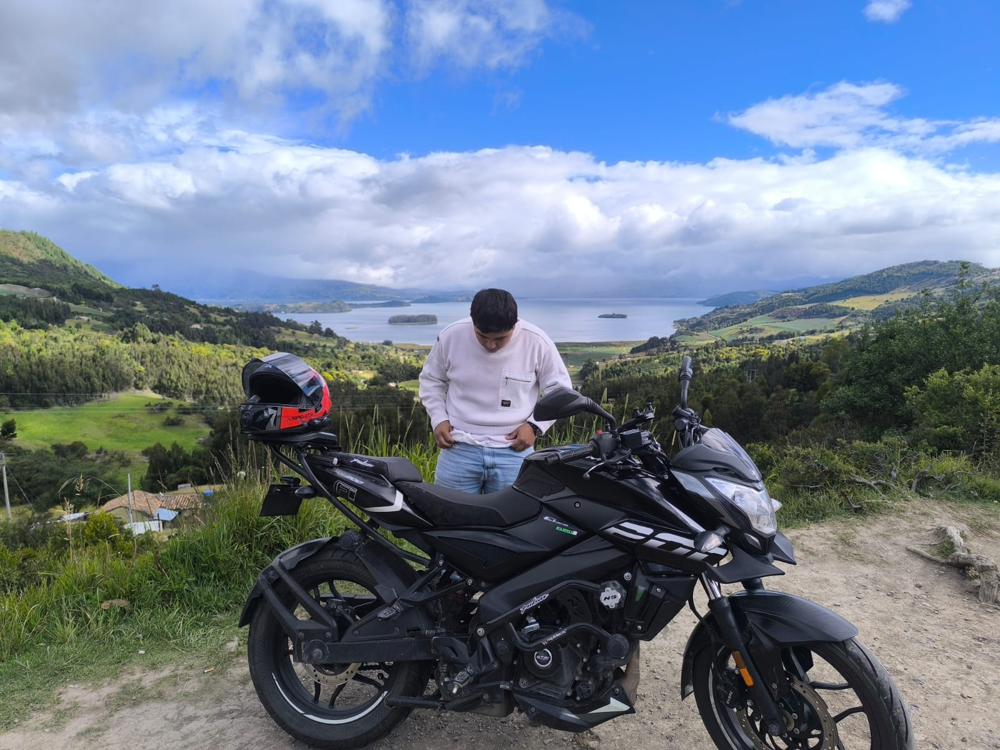
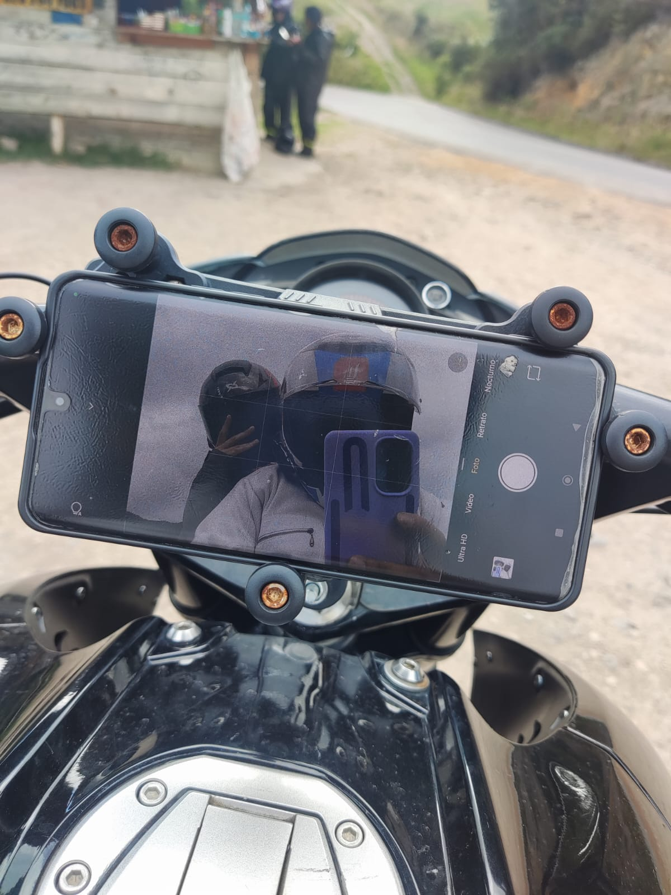
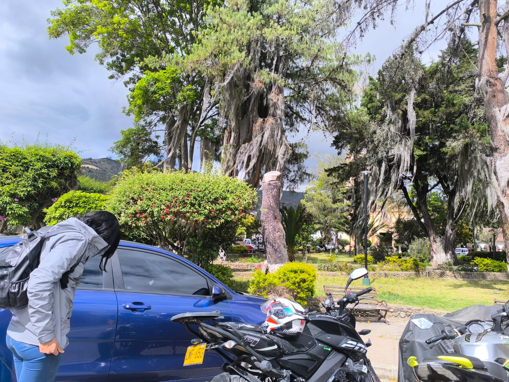
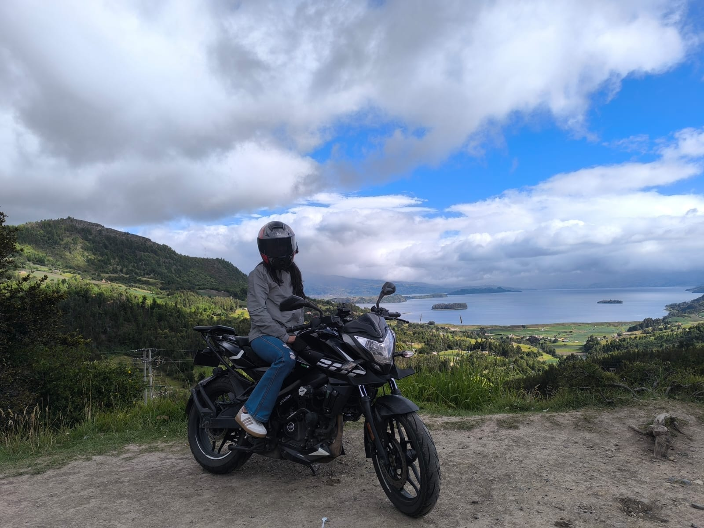
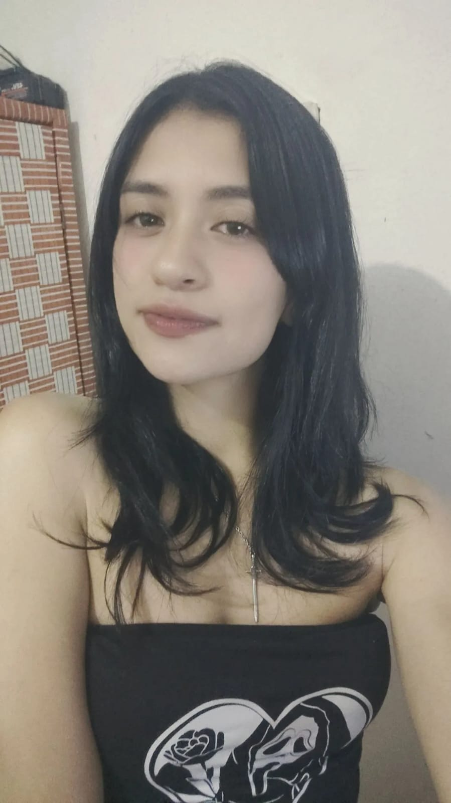
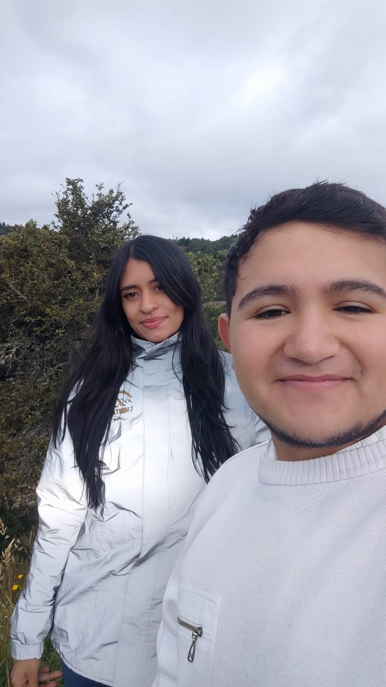

Un girasol
Porque sabía que te gustaban y quería llevarte un pedacito de alegría.
…y terminen convirtiéndose en alguien que no quieres dejar ir.
Hace poquito éramos dos personas que no se conocían. Una aplicación hizo que nuestros caminos se cruzaran y, casi sin darnos cuenta, empezamos a hablar.
Lo bonito fue que contigo todo se fue dando de una manera muy bonita. Hablábamos seguido, nos reíamos, nos molestábamos y poco a poco se volvió especial esperar un mensaje tuyo y querer saber cómo estabas.

Después de varios días hablando, por fin nos vimos. Estábamos comiendo postres, compartiendo ese momento, y entonces me dijiste que cerrara los ojos.
Y después… 💋
Nuestro primer beso. Un momento pequeñito que, sin saberlo, iba a quedarse guardado entre mis recuerdos favoritos.



Paisaje, fotos, coqueteo, abrazos, besitos… y una hamburguesita a las cuatro de la tarde porque aparentemente olvidamos que también había que almorzar. 😂
Porque sabía que te gustaban y quería llevarte un pedacito de alegría.
Un pequeño recuerdo que me diste, terminó significando mucho más.
Un paisaje increíble, muchas fotos, algunos nervios y demasiados motivos para sonreír..
Me pareces una mujer hermosa. Pero lo que más me gusta es que tu belleza no termina en tu carita.



tú eres una chica demasiado hermosa, y no hablo solamente de tu carita, que también me encanta. Me gusta mucho la persona que eres: inteligente, juiciosa, cariñosa, consentidora y esa forma tan bonita que tienes de tratarme.
Me gusta mucho lo fácil que ha sido conectar contigo. Que podamos hablar durante horas, molestarnos, reírnos por cualquier bobada y al mismo tiempo tener esos momentos tan bonitos que hemos compartido. Siento que contigo todo se ha dado de una manera muy natural, y creo que eso es de las cosas que más me gustan de nosotros.
Llevamos poquito tiempo, pero en este poquito tiempo te has vuelto alguien muy importante para mí. Me gusta recibir tus mensajes, saber de ti, compartir contigo y, siendo sincero, me hace muy feliz saber que tú también disfrutas tenerme cerca.
No sé exactamente qué nombre ponerle a todo esto todavía, y tampoco quiero correr. Prefiero disfrutarlo, seguir conociéndote y seguir viviendo todo esto contigo.
Porque si algo tengo claro es que conocerte ha sido una de esas cosas bonitas que uno no planea y simplemente pasan. Y siento que eres una persona que vale muchísimo la pena.
Así que quiero seguir descubriendo qué viene después, seguir riéndome contigo, seguir molestándote, seguir dándote besitos y, quién sabe... seguir construyendo esto tan bonito que empezó de una manera tan inesperada.
“Mi amor, mi cómplice y todo…”
“...somos mucho más que dos.”
No porque necesitemos ponerle un nombre a lo nuestro, sino porque hay conexiones que simplemente se sienten.
“ILOVEU”